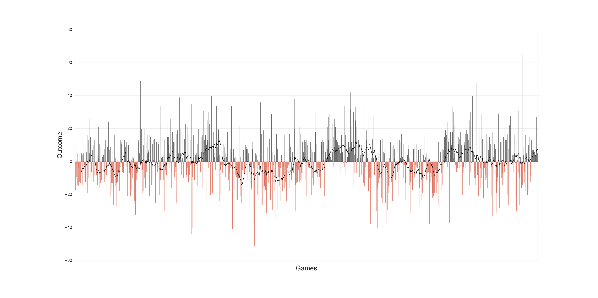
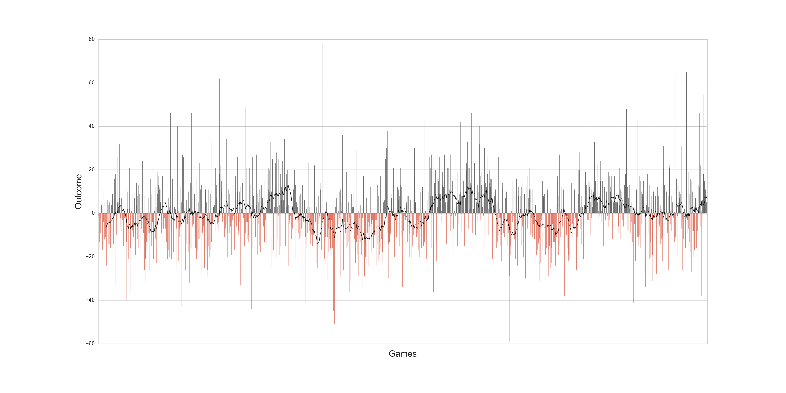

Dipl.Ing. Gert Mathyssen
Freelance Data Scientist - Machine Learning Engineer
I am a data scientist with more than 5 years of experience in Python, SQL and Excel. During the last years I have been focusing on machine learning (Scikit-learn and Tensorflow) and I am very passionate about it, so it would be great to do more ML projects.
I hold a master's degree in Electromechanical Engineering. While working as an EM engineer (over three years) I also gained experience in modelling by building models to calculate the ROI for renewable energy technologies (PV, CHP, heat pumps).
I mainly use the following Python libraries: Numpy, Pandas, Matplotlib, Plotly, Seaborn, Bokeh (server), Scikit-learn, Jupyter notebook, Django, Flask and many more.
 
